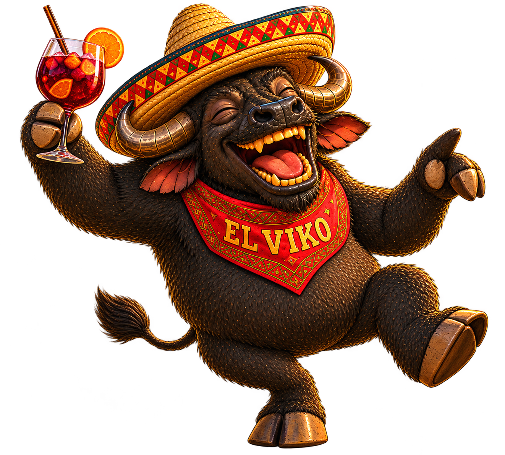

DIE CHARAKTERE VON
TRUCKER LÖNHARD
Lerne die Figuren aus der verrückten Welt von Trucker Lönhard kennen.

HAUPTCHARAKTER
TRUCKER LÖNHARD
„Der Mann. Der Mythos. Der Trucker.“
HINTERGRUNDGESCHICHTE
Trucker Lönhard wurde vor 51 Jahren in Ostdeutschland geboren und wuchs in ärmlichen Verhältnissen auf. Das Leben auf der Straße wurde ihm praktisch in die Wiege gelegt: Sein Vater war selbst Trucker, während seine Mutter als Automechanikerin arbeitete.
Einen großen Teil seiner Kindheit verbrachte Lönhard entweder auf der Straße oder zwischen Werkzeug, Motoren und Ersatzteilen in der Autowerkstatt. Bereits mit zwölf Jahren fing er an zu rauchen. Später absolvierte er eine Ausbildung zum Mechaniker.
Mit gerade einmal 16 Jahren begann Lönhard, durch das Land zu trampen. Auf seinen Reisen entdeckte er schließlich seine große Leidenschaft: Trucks.
Mit 21 kaufte er sich seinen ersten eigenen Truck. Seitdem verdient er sein Geld als Trucker und Fernfahrer – und für Lönhard gibt es bis heute kaum etwas Besseres als endlose Straßen, große Maschinen und das Leben unterwegs.
PERSÖNLICHKEIT
Lönhard ist laut, stürmisch und besitzt eine ausgesprochen kurze Zündschnur. Wenn ihm etwas nicht passt, fährt er schnell aus der Haut. Beleidigungen und Beschimpfungen gehören für ihn beinahe zum normalen Gespräch.
Seine große Klappe wird nur noch von seinem Ego übertroffen. Lönhard hält sich selbst nicht einfach nur für einen guten Trucker – er hält sich für den besten Trucker der Welt und gelegentlich sogar für Gott persönlich.
Dazu kommen seine beiden großen Laster: Bier und Kippen. Lönhard ist Kettenraucher und einem kalten Bier nur selten abgeneigt.

BEGLEITER
SCHLANGE FRIDOLIN
„Ich... ich... ich hab meine Power verloren!“
HINTERGRUNDGESCHICHTE
Fridolin begegnete Trucker Lönhard während dessen Reise durch die Wüste. Seitdem begleitet die kleine Schlange ihn auf seinen völlig chaotischen Abenteuern.
Über Fridolins Vergangenheit ist nur wenig bekannt. Sicher ist allerdings, dass in ihm eine geheimnisvolle Kraft steckt, deren Ursprung bislang niemand wirklich versteht.
PERSÖNLICHKEIT
Fridolin ist neugierig, verspielt und besitzt eine enorme Schwäche für Süßigkeiten. Besonders Zucker hat bei ihm allerdings ungewöhnliche Nebenwirkungen.
Wenn Fridolin zu viel Zucker erwischt, ist er gelegentlich fest davon überzeugt, ein Vogel zu sein.

WASSERBÜFFEL
EL VIKO
„Das Leben ist zu kurz für Stress und schlechte Sangria.“
HINTERGRUNDGESCHICHTE
EL VIKO stammt aus Mexiko und wurde später von Mato aufgenommen. Trotz seiner beeindruckenden Größe gehört er zu den entspanntesten Bewohnern des gesamten Trucker-Lönhard-Universums.
Er liebt mexikanisches Essen, spanische Musik und gemütliche Abende mit einem Glas Sangria.
PERSÖNLICHKEIT
EL VIKO ist ruhig, gelassen und lässt sich nur schwer aus der Ruhe bringen. Gleichzeitig besitzt er enorme Kraft und überraschend viel Geschwindigkeit.

GEGENSPIELER
DER WOLF
„Man weiß nie, was er als Nächstes plant.“
HINTERGRUNDGESCHICHTE
Über die Vergangenheit des Wolfs ist praktisch nichts bekannt. Niemand weiß genau, woher er kommt oder welches Ziel er eigentlich verfolgt.
Sicher ist nur, dass er immer wieder dort auftaucht, wo Lönhard und seine Freunde gerade am wenigsten mit ihm rechnen.
PERSÖNLICHKEIT
Der Wolf ist bösartig, hinterlistig und manipulativ. Er arbeitet lieber mit Täuschung und Überraschung als mit offenen Karten.
Seine größte Stärke ist seine Unberechenbarkeit.

SHERIFF VON MATOSVILLE
SHERIFF GHETTOQUEENS
„Recht und Ordnung... irgendwie.“
HINTERGRUNDGESCHICHTE
GHETTOQUEENS besitzt einen medizinischen Hintergrund und absolvierte später ein Sherifftraining in Spanien.
Irgendwann erklärte sie sich kurzerhand selbst zum Sheriff von Matosville. Ob sie dafür jemals offiziell eingesetzt wurde, interessiert sie nur wenig.
PERSÖNLICHKEIT
GHETTOQUEENS ist chaotisch, leicht reizbar und für ihre geringe Geduld bekannt. Besonders treffsicher ist sie trotz ihres Berufs allerdings nicht.
Deshalb verlässt sie sich bevorzugt auf ihre Wasserpistole mit geheimnisvollem magischem Wasser.

FARMBESITZER & ABENTEURER
MATO MCLOVIN
„Kröten.“
HINTERGRUNDGESCHICHTE
Mato wurde in Matosville in Mexiko geboren, wuchs jedoch in Bayern auf. Nach seiner Ausbildung zum Koch zog es ihn immer wieder hinaus in die Welt.
Heute kümmert er sich unter anderem um seine Wasserbüffel-Farm und gerät regelmäßig in die merkwürdigsten Abenteuer.
PERSÖNLICHKEIT
Mato wirkt meist freundlich und entspannt, macht sich innerlich jedoch häufig deutlich mehr Gedanken, als man ihm ansieht.
Zu seinen größten Leidenschaften gehören Reisen, Orcas und Schildkröten – die er konsequent einfach „Kröten“ nennt.